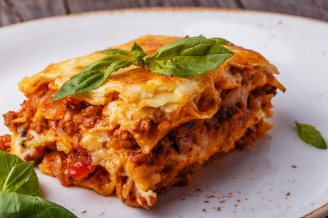

home
LASAGNA
home

DESCRIPTION
A classic Italian dish made with layers of pasta, rich meat or vegetable sauce, creamy béchamel, and cheese, baked to perfection.
INGREDIENTS
- 12 lasagna noodles
- 500g ground beef or chicken (or vegetables for veg option)
- 1 onion, chopped
- 2 cloves garlic, minced
- 2 cups tomato sauce
- 1 cup ricotta cheese
- 1 cup mozzarella cheese, shredded
- ½ cup Parmesan cheese, grated
- 1 egg
- 1 tsp dried oregano
- 1 tsp dried basil
- Salt and pepper to taste
- 2 tbsp olive oil
STEPS
- Boil the lasagna noodles as per the package instructions and drain them.
- Heat olive oil in a pan, sauté chopped onions and garlic.
- Add ground beef (or vegetables) and cook until browned.
- Pour in the tomato sauce, add oregano, basil, salt, and pepper. Simmer for 10 minutes.
- In a bowl, mix ricotta cheese, egg, and Parmesan cheese.
- In a baking dish, layer lasagna noodles, meat sauce, and ricotta mixture.
- Repeat the layers until all ingredients are used, topping with mozzarella cheese.
- Bake in a preheated oven at 375°F (190°C) for 30-40 minutes.
- Let it rest for 10 minutes before serving.